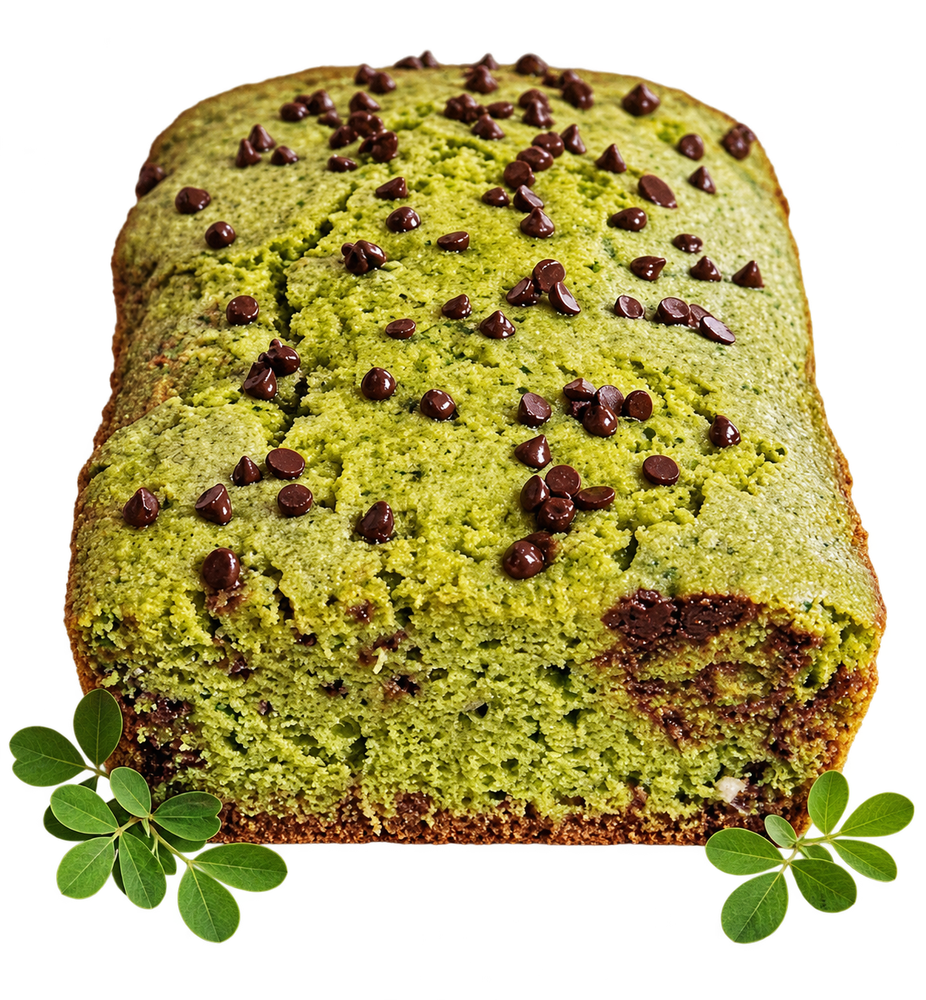
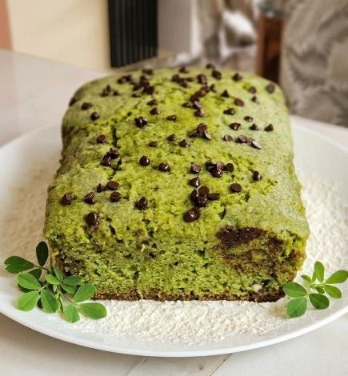

Lo verde también
puede ser delicioso.
Tu queque de siempre, con algo extraordinario.
Alfalfa, una textura suave y el gusto de descubrir
un sabor que nace de nuestra tierra.

Un bocado que sorprende.

EL VERDE ES PARTE DE NUESTRA ESENCIAUna receta familiar.
Un ingrediente inesperado.
Tomamos lo que más nos gusta de un queque y exploramos una nueva posibilidad: incorporar alfalfa en una proporción equilibrada, sin perder esa textura suave y esponjosa que invita a otro bocado.
Alfalfa como protagonista
Un ingrediente de nuestra región, explorado desde la repostería.
Equilibrio en cada bocado
Una propuesta de dulzor, aroma y sabor vegetal en armonía.
Un momento para ti
Pensado en una porción individual para acompañar tu pausa del día.
La receta del prototipo contiene trigo, huevos y leche. Consulta los ingredientes antes de consumir si tienes alguna alergia.
De nuestra tierra,
a tu próxima pausa.
Bocatto Alfa nace en Cajamarca como un proyecto de innovación: mirar un ingrediente conocido con otros ojos y transformarlo en una nueva experiencia de repostería.
Escuchamos, preparamos y compartimos. Este queque es el comienzo de una propuesta que sigue creciendo con las opiniones de quienes la prueban.
Sé parte de esta historia ↗La mejor parte:
compartirlo.
En la degustación inicial, los ocho participantes valoraron favorablemente el prototipo.
Resultado exploratorio de una prueba con 8 personas. No representa a todos los consumidores ni equivale a reseñas publicadas en esta web.
Ver videos de la degustación ↗opiniones favorables
Sabor · Textura · Aroma
Color · Presentación
¿Ya lo probaste?
Cuéntanos.
Cada opinión nos ayuda a mejorar.
Comparte tu experiencia con la comunidad.
¿Te animas a
probar algo diferente?
Déjanos tus datos para recibir novedades sobre
próximas degustaciones y disponibilidad.
Un poquito más.
¿Tiene un sabor muy intenso a alfalfa?
El prototipo utiliza una proporción controlada de alfalfa para buscar un sabor equilibrado. En la degustación inicial, los ocho participantes valoraron favorablemente su sabor.
¿Ya puedo comprarlo?
El proyecto está en etapa de validación. Puedes registrar tu interés para recibir novedades sobre disponibilidad y degustaciones. El precio de venta todavía no está confirmado.
¿Es vegano o libre de gluten?
No. La formulación del prototipo incluye harina de trigo, huevos y leche. No se presenta como un producto vegano ni libre de gluten.